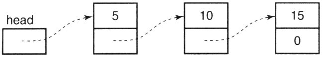

Los elementos de la matriz se almacenan en ubicaciones consecutivas en la memoria. Cuando se declara una matriz, la memoria que necesita se asigna en tiempo de compilación. Sin embargo, también puede utilizar la asignación de memoria dinámica para asignarle memoria en tiempo de ejecución. En este capítulo, estudiaremos la diferencia entre estas dos técnicas y veremos cuándo debemos usar la asignación de memoria dinámica y cómo realizar la asignación de memoria dinámica.
Cuando declara una matriz, debe especificar la longitud de la matriz con una constante de tiempo de compilación. Sin embargo, la longitud de la matriz a menudo se conoce en tiempo de ejecución, porque el espacio de memoria que requiere depende de los datos de entrada. Por ejemplo, un programa para calcular las calificaciones de los estudiantes y las calificaciones promedio puede necesitar almacenar datos para todos los estudiantes en una clase, pero la cantidad de estudiantes en diferentes clases puede ser diferente. En estos casos, el método que usamos generalmente es declarar una matriz más grande, que puede contener la mayoría de los elementos que puedan aparecer.
insinuación:
La ventaja de este método es la simplicidad, pero tiene varias desventajas. En primer lugar, este tipo de declaración introduce restricciones artificiales en el programa, si el número de elementos que necesita utilizar el programa excede la longitud de la declaración, no puede manejar esta situación. Para evitar esta situación, la forma obvia es declarar la matriz más grande, pero este enfoque empeora su segundo defecto. Si el número real de elementos requeridos por el programa es relativamente pequeño, se desperdicia la mayor parte del espacio de memoria de la enorme matriz. La tercera desventaja de este método es que si los datos de entrada exceden el rango de la matriz, el programa debe responder de manera razonable. No debería fallar con una excepción, pero no debería imprimir un resultado que parezca correcto pero que en realidad sea incorrecto. La lógica necesaria para lograr esto es realmente muy simple, pero es fácil para las personas formar el concepto de "las matrices nunca se desbordarán" en sus mentes, lo que las induce a no implementar este método.
La biblioteca de funciones de C proporciona dos funciones, malloc y free, que se utilizan para realizar la asignación y liberación de memoria dinámica, respectivamente. Estas funciones mantienen una reserva de memoria disponible. Cuando un programa necesita algo de memoria adicional, llama a la función malloc, malloc extrae una memoria adecuada del grupo de memoria y devuelve un puntero a esta memoria al programa. Esta memoria no se inicializa de ninguna manera en este momento. Si es muy importante inicializar esta memoria, debe inicializarla usted mismo o utilizar la función calloc (descrita en la siguiente sección). Cuando una parte de la memoria previamente asignada ya no está en uso, el programa llama a la función libre para devolverla al grupo de memoria para necesidades futuras.
Los prototipos de estas dos funciones se muestran a continuación, y ambas están declaradas en el archivo de encabezado stdlib.h.
void *malloc( size_t size );
void free( void *pointer );El parámetro de malloc es el número de bytes (caracteres) de memoria que se asignarán [1] . Si la memoria disponible en el grupo de memoria puede cumplir con este requisito, malloc devuelve un puntero al comienzo del bloque de memoria asignado.
Lo que asigna malloc es una pieza de memoria contigua. Por ejemplo, si se le solicita que asigne 100 bytes de memoria, entonces la memoria que realmente asigna son 100 bytes consecutivos y no se ubicará en dos o más bloques de memoria diferentes. Al mismo tiempo, la memoria realmente asignada por malloc puede ser un poco más de lo que solicitó. Sin embargo, este comportamiento lo define el compilador, por lo que no puede esperar que asigne definitivamente más memoria de la solicitada.
¿Qué sucede si el grupo de memoria está vacío o su memoria disponible no puede satisfacer su solicitud? En este caso, la función malloc solicita al sistema operativo más memoria y realiza tareas de asignación en esta nueva memoria. Si el sistema operativo no puede proporcionar más memoria a malloc, malloc devuelve un puntero NULL. Por lo tanto, es muy importante verificar cada puntero devuelto por malloc para asegurarse de que no sea NULL.
El parámetro libre debe ser NULL o un valor devuelto previamente por malloc, calloc o realloc (descrito más adelante). Pasar un parámetro NULL a free no tiene ningún efecto.
¿Cómo sabe malloc si la memoria que solicitó debe almacenar números enteros, valores de punto flotante, estructuras o matrices? No lo sabe: malloc devuelve un puntero de tipo void * por este motivo. El estándar dice que un puntero de tipo void * se puede convertir en cualquier otro tipo de puntero. Sin embargo, algunos compiladores, especialmente los más antiguos, pueden requerir que use la conversión de tipo coercitiva al realizar la conversión.
Para las máquinas que requieren alineación de límites, la posición inicial de la memoria devuelta por malloc siempre cumplirá con los requisitos del tipo más estricto de alineación de límites.
También hay dos funciones de asignación de memoria, calloc y realloc. Sus prototipos son los siguientes:
void *calloc( size_t num_elements,
size_t element_size );
void realloc( void *ptr, size_t new_size );calloc también se usa para asignar memoria. La principal diferencia entre malloc y calloc es que este último lo inicializa a 0 antes de devolver un puntero a la memoria. Esta inicialización suele ser conveniente, pero si su programa solo quiere almacenar algunos valores en una matriz, este proceso de inicialización es una pérdida de tiempo. Otra pequeña diferencia entre calloc y malloc es la forma en que solicitan la cantidad de memoria. Los parámetros de calloc incluyen el número de elementos requeridos y el número de bytes por elemento. Basándose en estos valores, puede calcular la memoria total que debe asignarse.
La función de reasignación se utiliza para modificar el tamaño de un bloque de memoria asignado previamente. Con esta función, puede ampliar o reducir un bloque de memoria. Si se usa para expandir un bloque de memoria, el contenido original de esta memoria aún se conserva, la memoria recién agregada se agrega a la parte posterior del bloque de memoria original y la nueva memoria no se inicializa de ninguna manera. Si se utiliza para reducir un bloque de memoria, se eliminará parte de la memoria al final del bloque de memoria y se mantendrá el contenido original de la parte restante de la memoria.
Si no se puede cambiar el tamaño del bloque de memoria original, realloc asignará otra memoria del tamaño correcto y copiará el contenido de la memoria original al nuevo bloque. Por lo tanto, después de usar realloc, ya no puede usar el puntero a la memoria anterior, sino que debe usar el nuevo puntero devuelto por realloc.
Finalmente, si el primer parámetro de la función realloc es NULL, entonces su comportamiento es exactamente el mismo que malloc.
Aquí hay un ejemplo, usa malloc para asignar un bloque de memoria.
El símbolo NULL está definido en stdio.h, en realidad es la constante literal 0. Actúa como un recordatorio visual aquí, recordándonos que el valor a probar es un puntero y no un número entero.
Si la asignación de memoria es exitosa, entonces tenemos un puntero a 100 bytes. En una máquina con un número entero de 4 bytes, esta memoria se tratará como una matriz de 25 elementos enteros, porque pi es un puntero a un número entero.
insinuación:
Sin embargo, si su objetivo es obtener suficiente memoria para almacenar 25 enteros, aquí hay un truco mejor para lograr este objetivo.
pi = malloc( 25 * sizeof( int ) );Este método es mejor porque es portátil. Puede obtener resultados correctos incluso en máquinas con diferentes longitudes de enteros.
Ahora que tiene un puntero, ¿cómo usa esta memoria? Por supuesto, puede usar el acceso indirecto y la aritmética de punteros para acceder a diferentes posiciones enteras de la matriz. El siguiente ciclo hace precisamente eso. Inicializa cada elemento de la matriz recién asignada a 0:
Como puede ver, puede usar no solo punteros, sino también subíndices. El segundo ciclo a continuación realiza las mismas tareas que el anterior.
A menudo, se producen muchos errores en programas que utilizan la asignación de memoria dinámica. Estos errores incluyen desreferenciar punteros NULL, cruzar el límite cuando se opera en memoria asignada, liberar memoria que no está asignada dinámicamente, intentar liberar parte de una memoria asignada dinámicamente y continuar usando una memoria dinámica después de que se haya liberado.
advertir:
El error más común de la asignación de memoria dinámica es olvidarse de verificar si la memoria solicitada se asignó correctamente. El programa 11.1 muestra una técnica para realizar esta verificación de errores de manera muy confiable. La macro MALLOC acepta el número de elementos y el tipo de cada elemento, calcula el número total de bytes de memoria necesarios y llama a alloc para obtener memoria [2] . alloc llama a malloc y comprueba que el puntero devuelto no sea NULL.
La última dificultad de este método es la primera instrucción #define inusual. Se utiliza para evitar la llamada directa ocasional a malloc debido a que otros bloques de código se insertan directamente en el programa. Después de agregar esta instrucción, si el programa llama ocasionalmente a malloc, el programa no podrá compilar debido a errores de sintaxis. La directiva #undef debe agregarse a alloc para que pueda llamar a malloc sin cometer errores.
advertir:
La segunda fuente más grande de errores en la asignación de memoria dinámica es que se excede el límite de la memoria asignada al operar la memoria. Por ejemplo, si obtiene una matriz de 25 enteros, si el valor del subíndice es menor que 0 o mayor que 24 al realizar una operación de referencia de subíndice, se producirán dos tipos de problemas.
El primer problema es obvio: la memoria a la que se accede puede contener los valores de otras variables. Modificarlo destruirá esa variable y modificar esa variable destruirá el valor que almacena allí. Este tipo de error es muy difícil de encontrar.
El segundo problema no es tan obvio. En algunas implementaciones de malloc y free, mantienen la reserva de memoria disponible en forma de lista enlazada. El acceso a áreas fuera de la memoria asignada puede destruir esta lista vinculada, lo que puede causar una excepción y terminar el programa.
/*
** 定义一个不易发生错误的内存分配器。
*/
#include < stdlib.h>
#define malloc 不要直接调用malloc!
#define MALLOC(num,type) (type *)alloc( (num) * sizeof(type) )
extern void *alloc( size_t size );Procedimiento 11.1a Asignador de comprobación de errores: interfaz
alloc.h
/*
** 不易发生错误的内存分配器的实现
*/
#include <stdio.h>
#include "alloc.h"
#undef malloc
void *
alloc( size_t size )
{
void *new_mem;
/*
** 请求所需的内存，并检查确实分配成功
*/
new_mem = malloc( size );
if( new_mem == NULL ){
printf( "Out of memory!\n" );
exit( 1 );
}
return new_mem;
}Procedimiento 11.1b Asignador de comprobación de errores: implementación
alloc.c
/*
** 一个使用很少引起错误的内存分配器的程序
*/
#include "alloc.h"
void
function()
{
int *new_memory;
/*
** 获得一串整型数的空间
*/
new_memory = MALLOC( 25, int );
/* ... */
}El procedimiento 11.1c utiliza el asignador de verificación de errores
a_client.c
Cuando falla un programa que utiliza la asignación dinámica de memoria, la gente puede fácilmente echar la culpa del problema al malloc y a las funciones gratuitas. Pero rara vez son los culpables. De hecho, el problema casi siempre está en su propio programa y, a menudo, se debe al acceso a áreas fuera de la memoria asignada.
advertir:
Cuando usa gratis, pueden ocurrir varios errores. El puntero pasado a free debe ser un puntero devuelto por malloc, calloc o realloc. Pasar un puntero a la función libre y dejar que libere una parte de la memoria que no está asignada dinámicamente puede hacer que el programa finalice inmediatamente o en un momento posterior. Intentar liberar una parte de la memoria asignada dinámicamente también puede causar problemas similares, como los siguientes:
No se permite liberar parte de una memoria. La memoria asignada dinámicamente debe liberarse en su totalidad. Sin embargo, la función de reasignación puede reducir una memoria asignada dinámicamente y liberar efectivamente parte de la memoria en su cola.
advertir:
Finalmente, debe tener cuidado de no acceder a la memoria que ha sido liberada por la función gratuita. Esta advertencia parece obvia, pero todavía hay un problema sutil aquí. Suponga que hace una copia de un puntero a la memoria asignada dinámicamente, y varias copias de este puntero están esparcidas por todo el programa. No puede garantizar que cuando utilice uno de los punteros, el otro puntero haya liberado la memoria a la que apunta. Por otro lado, debe asegurarse de que todos los lugares del programa que usan esta memoria dejen de usarla antes de que se publique.
Pérdida de memoria
Cuando la memoria asignada dinámicamente ya no sea necesaria, debe liberarse para poder reasignarla para su uso en el futuro. Asignar memoria pero no liberarla después de su uso provocará una pérdida de memoria. En aquellos sistemas operativos donde todos los programas en ejecución comparten un conjunto de memoria común, una pérdida de memoria exprimirá la memoria disponible poco a poco y, finalmente, la dejará sin nada. Para deshacerse de este dilema, solo reinicie el sistema.
Otros sistemas operativos pueden recordar el segmento de memoria que pertenece actualmente a cada programa, de modo que cuando un programa termina, toda la memoria asignada pero no liberada se devuelve al grupo de memoria. Pero incluso en tales sistemas, las pérdidas de memoria siguen siendo un problema grave, porque un programa que asigna memoria continuamente pero no libera memoria eventualmente se quedará sin memoria disponible. En este punto, el programa defectuoso no podrá continuar con la ejecución y su falla puede hacer que se pierda todo el trabajo actualmente completado.
Un uso común de la asignación de memoria dinámica es asignar espacio de memoria para matrices cuya longitud solo se conoce en tiempo de ejecución. El programa 11.2 lee una lista de números enteros, los ordena en orden ascendente y finalmente imprime esta lista.
/*
** 读取、排序和打印一列整型值。
*/
#include <stdlib.h>
#include <stdio.h>
/*
** 该函数由'qsort'调用，用于比较整型值。
*/
int
compare_integers( void const *a, void const *b )
{
register int const *pa = a;
register int const *pb = b;
return *pa > *pb ? 1 : *pa < *pb ? -1 : 0;
}
int
main()
{
int *array;
int n_values;
int i;
/*
** 观察共有多少个值。
*/
printf( "How many values are there? " );
if( scanf( "%d", &n_values ) != 1 || n_values <= 0 ){
printf( "Illegal number of values.\n" );
exit( EXIT_FAILURE );
}
/*
** 分配内存，用于存储这些值。
*/
array = malloc( n_values * sizeof( int ) );
if( array == NULL ){
printf( "Can't get memory for that many values.\n" );
exit( EXIT_FAILURE );
}
/*
** 读取这些数值。
*/
for( i = 0; i < n_values; i += 1 ){
printf( "? " );
if( scanf( "%d", array + i ) != 1 ){
printf( "Error reading value #%d\n", i );
free( array );
exit( EXIT_FAILURE );
}
}
/*
** 对这些值排序。
*/
qsort( array, n_values, sizeof( int ), compare_integers );
/*
** 打印这些值。
*/
for( i = 0; i < n_values; i += 1 )
printf( "%d\n", array[i] );
/*
** 释放内存并退出。
*/
free( array );
return EXIT_SUCCESS;
}Procedimiento 11.2 Ordenar una lista de valores enteros
sort.c
La memoria utilizada para contener esta lista se asigna dinámicamente, por lo que cuando escribe su programa, no tiene que adivinar cuántos valores el usuario podría querer ordenar. El número de valores que se pueden ordenar solo está limitado por la cantidad de memoria dinámica asignada a este programa. Sin embargo, cuando el programa ordena una lista pequeña, la memoria que realmente asigna es la memoria que realmente necesita, por lo que no hay desperdicio.
Ahora consideremos un programa que lee una cadena. Si no conoce la longitud de la cadena más larga de antemano, no puede usar matrices ordinarias como búfer. Por el contrario, puede utilizar la asignación dinámica de memoria. Cuando encuentre una línea de entrada cuya longitud exceda el búfer, puede reasignar un búfer más grande y cargar el resto de la línea en él. La implementación de esta técnica se reserva como ejercicio de programación.
/*
** 用动态分配内存制作一个字符串的一份拷贝。注意：调用程序应该负责检查这块内
** 存是否成功分配！这样做允许调用程序以任何它所希望的方式对错误作出反应。
*/
#include < stdlib.h>
#include < string.h>
char *
strdup( char const *string )
{
char *new_string;
/*
** 请求足够长度的内存，用于存储字符串和它的结尾NUL字节。
*/
new_string = malloc( strlen( string ) + 1 );
/*
** 如果我们得到内存，就复制字符串。
*/
if( new_string != NULL )
strcpy( new_string, string );
return new_string;
}Procedimiento 11.3 Copiar una cadena
strdup.c
La entrada se lee en el búfer, una línea a la vez. En este punto, se puede determinar la longitud de la cadena y luego se asigna memoria para almacenar la cadena. Finalmente, la cadena se copia a la nueva memoria. De esta forma, el búfer se puede utilizar para leer la siguiente línea de entrada.
La función denominada strdup en el programa 11.3 devuelve una copia de la cadena de entrada, que se almacena en una memoria asignada dinámicamente. La función primero intenta obtener suficiente memoria para almacenar esta copia. La capacidad de la memoria debe ser un byte más que la longitud de la cadena para almacenar el byte NUL al final de la cadena. Si la memoria se asigna correctamente, la cadena se copia en esta nueva memoria. Finalmente, la función devuelve un puntero a esta memoria. Tenga en cuenta que si la asignación de memoria falla por alguna razón, el valor de new_string será NULL. En este caso, la función devolverá un puntero NULL.
Esta función es muy conveniente y muy útil. De hecho, aunque el estándar no lo menciona, muchos entornos lo utilizan como parte de la biblioteca.
Nuestro último ejemplo ilustra cómo puede usar la asignación de memoria dinámica para eliminar el desperdicio de espacio de memoria causado por el uso de registros variantes. El programa 11.4 es una versión modificada del ejemplo del sistema de inventario en el Capítulo 10. El procedimiento 11.4a contiene una declaración de registros de inventario.
Como antes, el sistema de inventario debe procesar dos tipos de registros, uno para piezas y otro para ensamblaje. La primera estructura guarda la información especial de la pieza (aquí solo se muestra una parte de esta estructura) y la segunda estructura guarda la información especial del conjunto. La última declaración se utiliza para los registros de inventario y contiene información común sobre piezas y conjuntos y una pieza variante.
Dado que los diferentes campos de la pieza variante tienen diferentes longitudes (de hecho, la longitud del registro de ensamblaje es variable), la unión contiene un puntero a la estructura en lugar de la estructura en sí. La asignación dinámica permite que el programa cree un registro de inventario, el tamaño de la memoria que utiliza es la longitud del artículo que se va a almacenar, para que la memoria no se desperdicie.
El programa 11.4b es una función que crea un registro de inventario para cada ensamblaje. Esta tarea depende del número de piezas diferentes contenidas en el ensamblaje, por lo que este valor se pasa a la función como parámetro.
Esta función asigna memoria para tres cosas: registros de inventario, estructura de ensamblaje y una matriz de piezas en la estructura de ensamblaje. Si alguna de estas asignaciones falla, se liberará toda la memoria asignada y la función devuelve un puntero NULL. De lo contrario, los campos type e info.subassy-> n_parts se inicializan y la función devuelve un puntero al registro.
La asignación de memoria para los registros de inventario de piezas es más fácil que para los registros de inventario de ensamblaje porque solo requiere dos asignaciones de memoria. Por lo tanto, esta función no se explica aquí.
/*
** 存货记录的声明。
*/
/*
** 包含零件专用信息的结构。
*/
typedef struct {
int cost;
int supplier;
/* 其他信息。 */
} Partinfo;
/*
** 存储装配件专用信息的结构。
*/
typedef struct {
int n_parts;
struct SUBASSYPART {
char partno[10];
short quan;
} *part;
} Subassyinfo;
/*
** 存货记录结构，它是一个变体记录。
*/
typedef struct {
char partno[10];
int quan;
enum { PART, SUBASSY } type;
union {
Partinfo *part;
Subassyinfo *subassy;
} info;
} Invrec;Procedimiento 11.4a Declaración del sistema de inventario
inventor.h
/*
** 用于创建SUBASSEMBLY(装配件)存货记录的函数。
*/
#include < stdlib.h>
#include < stdio.h>
#include "inventor.h"
Invrec *
create_subassy_record( int n_parts )
{
Invrec *new_rec;
/*
** 试图为Invrec部分分配内存。
*/
new_rec = malloc( sizeof( Invrec ) );
if( new_rec != NULL ){
/*
** 内存分配成功，现在存储SUBASSYINFO部分。
*/
new_rec->info.subassy =
malloc( sizeof( Subassyinfo ) );
if( new_rec->info.subassy != NULL ){
/*
** 为零件获取一个足够大的数组。
*/
new_rec->info.subassy->part = malloc(
n_parts * sizeof( struct SUBASSYPART ) );
if( new_rec->info.subassy->part != NULL ){
/*
** 获取内存，填充我们已知道值的字段，然后返回。
*/
new_rec->type = SUBASSY;
new_rec->info.subassy->n_parts =
n_parts;
return new_rec;
}
/*
** 内存已用完，释放我们原先分配的内存。
*/
free( new_rec->info.subassy );
}
free( new_rec );
}
return NULL;
}Procedimiento 11.4b crear registros de variantes de forma dinámica
invcreat.c
El programa 11.4c contiene la última parte de este ejemplo: una función para destruir registros de inventario. Esta función es aplicable a ambos tipos de registros de inventario. Utiliza una instrucción de cambio para determinar el tipo de registro que se le pasa y libera toda la memoria asignada dinámicamente a todos los campos de este registro. Finalmente, este registro se elimina.
En este caso, un error común es liberar el registro antes de que se libere la memoria señalada por el campo en el registro. Después de que se publique el registro, es posible que no pueda acceder de manera segura a ninguno de los campos que contiene.
/*
** 释放存货记录的函数。
*/
#include <stdlib.h>
#include "inventor.h"
void
discard_inventory_record( Invrec *record )
{
/*
** 删除记录中的变体部分
*/
switch( record->type ){
case SUBASSY:
free( record->info.subassy->part );
free( record->info.subassy );
break;
case PART:
free( record->info.part );
break;
}
/*
** 删除记录的主体部分
*/
free( record );
}Procedimiento 11.4c Destrucción de registros variantes
invdelet.c
Aunque el siguiente fragmento de código no parece muy claro de un vistazo, su eficiencia es ligeramente superior a la del programa 11.4c.
Este código no distingue entre piezas y conjuntos al publicar la parte variante del registro. Cualquier miembro de la unión puede pasar a la función libre, porque a esta última no le importa el tipo de contenido al que apunta el puntero.
Cuando se declara la matriz, se debe conocer su longitud en el momento de la compilación. La asignación de memoria dinámica permite al programa asignar espacio de memoria para una matriz cuya longitud solo se conoce en tiempo de ejecución.
Tanto las funciones malloc como calloc se utilizan para asignar dinámicamente un bloque de memoria y devolver un puntero al bloque de memoria. El parámetro de malloc es el número de bytes de memoria que se asignarán. La diferencia es que los parámetros de calloc son la cantidad de elementos que necesita asignar y la longitud de cada elemento. La función calloc inicializa la memoria a cero antes de regresar, y la memoria no se inicializa de ninguna manera cuando regresa la función malloc. Llamar a la función de reasignación puede cambiar el tamaño de una pieza de memoria que se ha asignado dinámicamente. Una forma posible de aumentar el tamaño de un bloque de memoria es copiar todos los datos del bloque de memoria original en un bloque de memoria nuevo y más grande. Cuando un bloque de memoria asignado dinámicamente ya no está en uso, se debe llamar a la función libre para devolverlo al grupo de memoria disponible. Una vez que se libera la memoria, ya no se puede acceder a ella.
Si la asignación de memoria solicitada falla, las funciones malloc, calloc y realloc devolverán un puntero NULL. Las consecuencias de acceder incorrectamente al área fuera de la memoria asignada son similares a acceder a una matriz fuera de los límites, pero este error también puede destruir la reserva de memoria disponible y hacer que el programa falle. Si no se devuelve un puntero de una función anterior malloc, calloc o realloc, no se puede pasar como parámetro a la función libre. No se puede simplemente liberar parte de un recuerdo.
La pérdida de memoria significa que después de que la memoria se asigna dinámicamente, no se libera cuando ya no se usa. Las pérdidas de memoria aumentarán el tamaño del programa y pueden provocar que el programa o el sistema se bloqueen.
1. No compruebe si el puntero devuelto por la función malloc es NULL.
2. Acceda a áreas fuera de la memoria asignada dinámicamente.
3. Pase un puntero a la función libre que no es devuelta por la función malloc.
4. Acceda a él después de que se libere la memoria dinámica.
1. La asignación de memoria dinámica ayuda a eliminar las limitaciones que existen dentro del programa.
2. Utilice sizeof para calcular la longitud del tipo de datos para mejorar la portabilidad del programa.
1. En su sistema, ¿cuál es la longitud máxima de la matriz estática que puede declarar? Con la asignación de memoria dinámica, ¿cuál es el bloque de memoria máximo que puede obtener?
2. Cuando solicita asignar 500 bytes de memoria a la vez, ¿qué tan grande es la cantidad total de memoria asignada dinámicamente que realmente obtiene? ¿Qué pasa cuando solicita asignar 5000 bytes a la vez? ¿Hay alguna diferencia entre ellos? Si es así, ¿cómo se explica?
3. En un programa que lee una cadena de un archivo, ¿hay algún valor que pueda usarse lógicamente como la longitud del búfer de entrada?
4. Algunos compiladores de C proporcionan una función llamada alloca, que se diferencia de la función malloc en que asigna memoria en la pila. ¿Cuáles son las ventajas y desventajas de este tipo de asignación?
5. El siguiente programa se utiliza para leer números enteros. El rango de números enteros está entre 1 y el tamaño leído de la entrada estándar. Devuelve el número de ocurrencias de cada valor. Este programa contiene varios errores, ¿puedes encontrarlos?
/*
**获得足够的内存来容纳计数。
*/
arry = (int *)malloc ( size * 2)
/*
**调整指针，让它后退一个整型位置，这样我们就可以使用范围1-size的下标。
*/
arry - = 1;
/*
**把各个元素值清零。
for ( i =0; i <=size; i +=1 )
array[i]= 0 ;
/*
**计数每个值出现的次数，然后还回结果。
*/
while(scanf( *%d*, &i ) = = ) )
arry[ i ] +=1;
free(arry);
return arry;
}6. Suponga que necesita escribir un programa y desea minimizar el uso de la pila. ¿Puede ayudarlo la asignación de memoria dinámica? ¿Qué pasa con el uso de datos escalares?
7. En el programa 11.4b, ¿cuáles son las consecuencias de eliminar dos llamadas de función libres?
★ 1. Intente escribir la función calloc usted mismo. La función malloc se usa dentro de la función para obtener memoria.
★★ 2. Escriba una función que lea una lista de números enteros de la entrada estándar, almacene estos valores en una matriz asignada dinámicamente y devuelva esta matriz. La función juzga si la lista de entrada ha terminado observando EOF. El primer número de la matriz es el número de valores contenidos en la matriz, seguido de estos valores enteros.
★★★ 3. Escriba una función que lea una cadena de la entrada estándar, copie la cadena en la memoria asignada dinámicamente y devuelva una copia de la cadena. ¡Esta función no debería imponer ninguna restricción a la longitud de la cadena de lectura!
★★★ 4. Escriba un programa para crear una estructura de datos como se muestra en la siguiente figura. Los últimos tres objetos son todos estructuras asignadas dinámicamente. El primer objeto puede ser un puntero estático a la estructura. No es necesario que este programa sea demasiado completo; discutiremos esta estructura de datos en el próximo capítulo.

[1] Tenga en cuenta que el tipo de este parámetro es size_t, que es un tipo sin firmar, definido en stdlib.h.
[2] La macro #define se describe en detalle en el Capítulo 14.